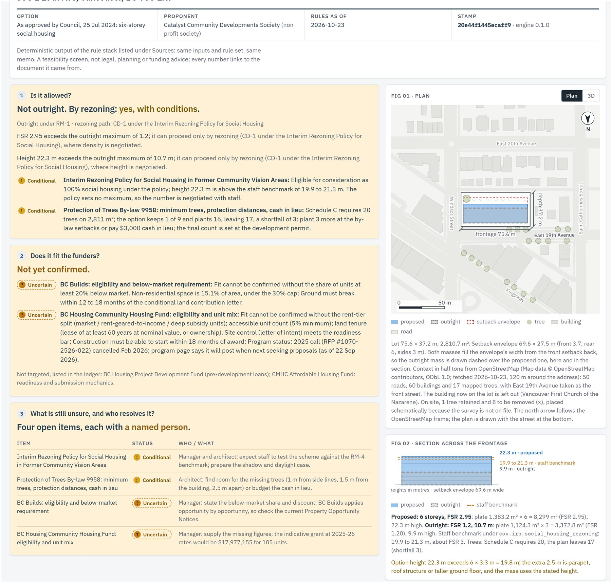

1 Pick a site
Choose an example site or type in your own. Each field has an (i) that says what it is for and which rule reads it.
Funding-Fit Memo checks a site and a building option against Vancouver's zoning, the Province's rules, City policy, design standards and the funding programs, all at once, before the first drawing. It writes a short memo with three answers and shows every rule it used.

A board votes pre-development money, often $200,000 to $500,000, on a feasibility read that cites nothing and carries no date. The rules it rests on sit in five layers, each read by someone else at a later stage, so the first drawing usually comes before the first rule check. The memo is that check, done on day one and dated.
Choose an example site or type in your own. Each field has an (i) that says what it is for and which rule reads it.
Storeys, height, floor area, the unit mix, rents, who will own it, which funders you have in mind. A blank comes back as "uncertain", never as a guess.
Press Run the rules. The memo appears beside the form. Change a number and run again to compare.
Outright, or by rezoning.
Density and height against the district schedule, the rezoning policy that applies, the Province's transit rules, the family-unit and tree by-laws.
Yes, no, or what is missing.
The Community Housing Fund, BC Builds and the others, against their published criteria: proponent, rent mix, accessible units, site control, lease.
Each open item, with a named person.
The architect, the development manager or the planner, and the document they need to check.
998 E 19th Ave, Vancouver: six storeys of social housing on church land, approved by Council in July 2024. The inputs come from the City's public report; the placeholders say they are placeholders.
A two-minute walkthrough runs the rules for you. On the web the engine loads into your browser once (about 10 MB); nothing is uploaded.
The approved scheme beside a what-if that answers every funder question: the same site, two options, and the memo's three answers side by side.
The what-if's memo as a document, with its ledger and sources.
Try it at kailisun98.github.io/BC-Housing-Feasibility-Study
Working on a site of your own? Ask for a 20-minute session, or run it on your own machine with python -m ffm ui.